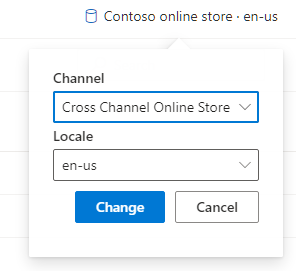

Die kanalübergreifende Freigabe aktivieren und verwenden
Important
Dynamics 365 Retail ist jetzt Dynamics 365 Commerce und bietet umfassende Handelsfunktionen für alle Kanäle – von E-Commerce über Shops bis hin zu Callcentern. Weitere Informationen zu diesen Änderungen finden Sie unter Microsoft Dynamics 365 Commerce.
In diesem Thema wird beschrieben, wie Sie die kanalübergreifende Freigabefunktion von Microsoft Dynamics 365 Commerce Site Builder aktivieren und verwenden.
Übersicht
Durch die kanalübergreifende Freigabe können Einzelhändler Inhalte wiederverwenden und zwischen mehreren Kanälen einer Website austauschen. Diese Funktion ist nützlich, wenn die Site-Kanäle eine kompatible Basissprache haben oder wenn sie zahlreiche gemeinsame Inhaltselemente haben.
Die kanalübergreifende Freigabe aktiviert einen Standardkanal, der nach verfügbaren Inhalten durchsucht wird, wenn keine kanalspezifische Version des angeforderten Inhalts gefunden wird. Inhalte, die für mehrere Kanäle freigegeben werden sollen, werden im Standardkanal erstellt. Dieser Inhalt kann für jedes Gebietsschema lokalisiert werden, das auf einem beliebigen Site-Kanal verwendet wird.
Verwenden der kanalübergreifenden Freigabe
Die kanalübergreifende Freigabe ist nützlich, wenn mehrere Kanäle auf einer Website Inhalte freigeben können. Beispielsweise kann ein Einzelhändler mit mehreren Marken und Ladenzeilen, die unter einer einzigen Website zusammengefasst sind, einige Inhalte für einige oder alle Ladenzeilen freigeben. Dieser freigegebene Inhalt kann Seiten mit allgemeinen Geschäftsbedingungen, Zahlungsbedingungen, Versandmethoden und häufig gestellten Fragen (FAQ) enthalten.
Die kanalübergreifende Freigabe unterstützt auch Fragmente. Daher kann eine Inhaltsseite, die kanalspezifische Fragmente enthält, als kanalübergreifender Inhalt erstellt werden. In diesem Fall werden kanalspezifische Fragmente auf einer kanalübergreifenden Seite nur dann gerendert, wenn sie vom entsprechenden Storefront-Kanal angefordert werden, obwohl der größte Teil des Inhalts von den Kanälen gemeinsam genutzt wird.
Websites mit nur einem Kanal oder Websites mit mehreren Kanälen, auf denen keine Inhalte freigegeben werden können, profitieren nicht von der kanalübergreifenden Freigabe.
Aktivieren der kanalübergreifenden Freigabe
Die kanalübergreifende Freigabe wird auf Site-Ebene aktiviert. Diese Operation ist einseitig. Mit anderen Worten, nachdem die kanalübergreifende Freigabe aktiviert wurde, kann sie nicht deaktiviert werden.
Führen Sie die folgenden Schritte aus, um die kanalübergreifende Freigabe im Commerce Site Builder zu aktivieren.
Gehen Sie zu Site-Einstellungen > Funktionen.
Stellen Sie die Option für die kanalübergreifende Freigabe-Funktion auf Ein.

Nachdem Sie die kanalübergreifende Freigabe aktiviert haben, werden kanalübergreifende Informationen im Abschnitt Kanäle bei Site-Einstellungen > Funktionen angezeigt, wie das Beispiel in der folgenden Abbildung zeigt.

Nachdem Sie die kanalübergreifende Freigabe aktiviert haben, enthält das Feld Kanal oben rechts im Commerce Site Builder eine Option Kanalübergreifender Onlineshop, mit der Sie kanalübergreifende Inhalte verwalten können, wie in der folgenden Abbildung dargestellt.

Erstellen und verwenden kanalübergreifender Inhalte
Sie können kanalübergreifende Inhalte auf verschiedene Arten erstellen und verwenden. Sie können beispielsweise kanalübergreifende Fragmente erstellen, kanalübergreifende Seiten erstellen, die kanalübergreifende und kanalspezifische Inhalte verwenden, und kanalübergreifende Fragmente mit kanalspezifischen Versionen von Fragmenten überschreiben.
Ein kanalübergreifendes Fragment erstellen
Führen Sie die folgenden Schritte aus, um kanalübergreifende Fragmente im Commerce Site Builder zu erstellen.
- Wechseln Sie zu Fragmente und wählen Sie Neu aus, um ein neues Fragment zu erstellen.
- Wählen Sie im Dialogfeld Neues Seitenfragment das Modul Werbebanner aus, und geben Sie dann unter Name des Seitenfragments einen Namen ein (z. B. Kanalübergreifendes Banner). Wählen Sie dann OK aus.
- Im Eigenschaftenbereich des Werbebanner-Moduls wählen Sie Nachricht hinzufügen und dann Nachricht aus.
- In dem Nachricht-Dialogfeld unter Text geben Sie Kanalübergreifend ein und wählen OK aus.
- Wählen Sie Speichern, wählen Sie Bearbeiten beenden, um die Seite einzuchecken, und wählen Sie dann Veröffentlichen, um es zu veröffentlichen.
Dieses kanalübergreifende Fragment kann auf kanalübergreifenden oder kanalspezifischen Seiten verwendet werden, die auf einem beliebigen Site-Kanal erstellt werden.
Erstellen einer kanalübergreifenden Seite, die kanalübergreifenden Inhalt verwendet
Kanalübergreifende Seiten können auf jedem Kanal Ihrer Website verwendet werden. Daher können Sie eine Seite mit freigegebenen Inhalten einmal erstellen und alle nachfolgenden Aktualisierungen an einem einzigen Ort vornehmen. Zum Beispiel kann eine kanalübergreifende Seite Geschäftsbedingungen mit der URL /toc von allen Kanälen einer Site gemeinsam genutzt werden. Wenn die Basis-URLs für die Site-Kanäle www.fabrikam.com/brand1 und www.fabrikam.com/brand2 sind, ist die gleiche kanalübergreifende gemeinsam genutzte Geschäftsbedingungen-Seite unter beiden URLs des Site-Kanals www.fabrikam.com/brand1/toc bzw. www.fabrikam.com/brand2/toc, verfügbar. Wenn die Geschäftsbedingungen-Seite später aktualisiert werden muss, müssen Sie nur die einzelne, freigegebene Seite aktualisieren.
Führen Sie die folgenden Schritte aus, um im Commerce Site Builder eine kanalübergreifende Seite zu erstellen, die kanalübergreifenden Inhalt verwendet.
- Wechseln Sie zu Seiten, und wählen Sie dann Neu aus, um eine neue Seite zu erstellen.
- In dem Dialogfeld Wählen Sie eine Vorlage wählen Sie eine Vorlage z. B. Marketing aus.
- Geben Sie unter Seitenname einen Namen für die Seite ein (z. B. Kanalübergreifende Seite).
- Unter Seiten-URL geben Sie eine Seiten-URL ein (z. B. Beispielseite), und wählen Sie dann OK aus.
- Im Slot Hauptseite der neuen Seite wählen Sie die Ellipsen-Schaltfläche (...) und wählen Sie Fragment hinzufügen.
- Im Dialogfeld Fragment hinzufügen wählen Sie das zuvor erstellte kanalübergreifende Fragment mit einem Werbebanner aus und wählen dann OK.
- Wählen Speichern und dann Vorschau aus, um eine Vorschau der Seite anzuzeigen. Sie sollten das Werbebanner mit der Aufschrift „Kanalübergreifend“ sehen.
- Wählen Bearbeiten beenden, um die Seite einzuchecken, und wählen Sie dann Veröffentlichen, um sie zu veröffentlichen.
Erstellen einer kanalspezifischen Seite, die kanalübergreifenden Inhalt verwendet
Durch die Verwendung kanalübergreifender Inhalte auf kanalspezifischen Seiten können Sie ein freigegebenes Inhaltsfragment einmal erstellen und dann auf kanalspezifischen Seiten verwenden. Dieses „Single Sourcing“ ist nützlich für freigegebene Inhalte wie Geschäftsbedingungen, Zahlungsbedingungen oder Kontaktinformationen.
Führen Sie die folgenden Schritte aus, um im Commerce Site Builder eine kanalspezifische Seite zu erstellen, die kanalübergreifenden Inhalt verwendet.
- Innerhalb eines bestimmten Kanals, wie z. B. Fabrikam erweiterter Onlineshop, gehen Sie zu Seiten und wählen dann Neu aus, um eine neue Seite zu erstellen.
- In dem Dialogfeld Wählen Sie eine Vorlage wählen Sie eine Vorlage z. B. Marketing aus.
- Geben Sie unter Seitenname einen Namen für die Seite ein (z. B. Kanalspezifische Seite).
- Unter Seiten-URL geben Sie eine Seiten-URL ein (z. B. kanalspezifischeseite), und wählen Sie dann OK aus.
- Im Slot Hauptseite der neuen Seite wählen Sie die Ellipsen-Schaltfläche (...) und wählen Sie Fragment hinzufügen.
- In dem Dialogfeld Fragment hinzufügen unter Kanal wählen Sie Kanalübergreifender Online-Shop aus. Das zuvor erstellte kanalübergreifende Fragment sollte in der Liste angezeigt werden. Wählen Sie es und dann OK aus.
- Wählen Speichern und dann Vorschau aus, um eine Vorschau der Seite anzuzeigen. Sie sollten das Werbebanner mit der Aufschrift „Kanalübergreifend“ sehen.
- Wählen Bearbeiten beenden, um die Seite einzuchecken, und wählen Sie dann Veröffentlichen, um sie zu veröffentlichen.
Erstellen einer kanalspezifischen Version einer kanalübergreifenden Seite
Die kanalübergreifende Freigabe unterstützt das Überschreiben kanalübergreifender Inhalte. Beispielsweise teilen alle bis auf einen Ihrer Website-Kanäle denselben Inhalt. Dieser eine Site-Kanal erfordert unterschiedliche Inhalte. Um die verschiedenen Inhalte dafür zu implementieren, überschreiben Sie den kanalübergreifenden Inhalt mit kanalspezifischem Inhalt, indem Sie eine kanalspezifische Version der kanalübergreifenden Seite erstellen.
Führen Sie die folgenden Schritte aus, um im Commerce Site Builder eine kanalspezifische Version einer kanalübergreifenden Seite zu erstellen.
- In dem Feld Kanal oben rechts wählen Sie Kanalübergreifender Onlineshop aus.
- Öffnen Sie die zuvor erstellte kanalübergreifende Seite.
- Wählen Sie im Feld Kanal oben rechts den Kanal aus, der einen bestimmten Inhalt haben soll. Der Seiteneditor zeigt eine Meldung an, in der Sie aufgefordert werden, eine neue Seitenvariante zu erstellen.
- Wählen Sie Seitenvariante erstellen aus.
- Im Haupt-Slot der Seitenvariante wählen Sie die Ellipse (...) und dann Modul hinzufügen aus.
- Wählen Sie im Dialogfeld Modul hinzufügen das Modul Werbebanner und dann OK aus.
- Im Eigenschaftenbereich des Werbebanner-Moduls wählen Sie Nachricht hinzufügen und dann Nachricht aus.
- In dem Nachricht-Dialogfeld unter Text geben Sie Kanalspezifisch ein und wählen OK aus.
- Wählen Speichern und dann Vorschau aus, um eine Vorschau der Seite anzuzeigen. Sie sollten das Werbebanner mit der Aufschrift „Kanalspezifisch“ sehen.
- Wählen Bearbeiten beenden, um die Seite einzuchecken, und wählen Sie dann Veröffentlichen, um sie zu veröffentlichen.
Wenn Sie nun die Basis-URL des Kanals verwenden und zur URL der kanalübergreifenden Seite auf dieser Site wechseln, wird der kanalspezifische Inhalt anstelle des kanalübergreifenden Inhalts angezeigt.
Zusätzliche Ressourcen
Möglichkeiten zum Hinzufügen von Inhalten